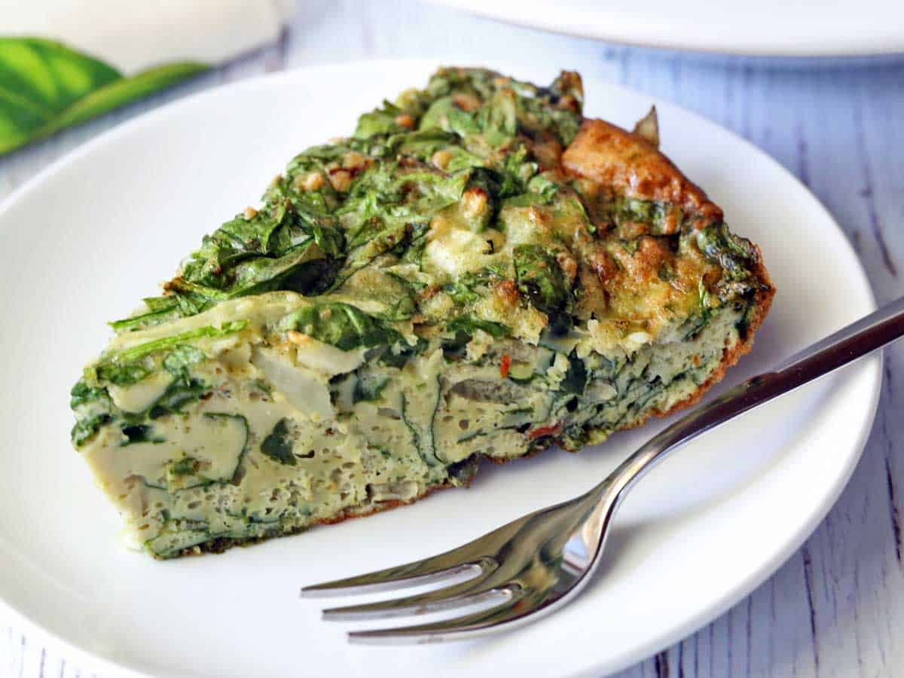

Spinach Frittata

A flavorful spinach frittata, featuring a blend of parmesan cheese and onions, infused with the fragrant notes of thyme
This spinach frittata is a wonderfully simple dish that effortlessly delivers a delicious, visually appealing, and substantive meal. Its crowd-pleasing flavor profile, coupled with its versatility, cement its status as a go-to option in my recipe arsenal.
Ingredients
- 8 large eggs
- 1/2 teaspoon kosher salt
- 1/4 teaspoon black pepper
- 1/2 teaspoon garlic powder
- 1/2 teaspoon dried thyme
- 1/2 teaspoon red pepper flakes
- 1/2 cup parmesan - grated
- 1/2 medium onion - diced
- 1 (5 0z) bag fresh baby spinach leaves - finely chopped
- Preheat your oven to 400°F. Place an ungreased ceramic or glass 9-inch pie plate in the preheating oven, allowing it to preheat with the oven.
- In a large bowl, whisk the eggs with kosher salt, black pepper, garlic powder, dried thyme, and red pepper flakes.
- Stir in the parmesan and the chopped onion. Then stir in the spinach in batches.
- Using oven mitts, pull the hot pie plate out of the oven and place it on a trivet. Lightly grease the pan.
- Pour the egg and spinach mixture into the hot pie plate. Use a rubber spatula to smooth out the top. It will seem like a lot of spinach relative to the eggs but remember that spinach wilts as it cooks.
- Return the pan to the oven. Bake the frittata until it's puffed, and a toothpick inserted in its center comes out clean, 25-30 minutes.
- Cool the frittata for 15 minutes in the pan before slicing it into eight triangles and serving.